Verificar la autenticidad de un recibo
Cualquiera puede verificar la autenticidad de un recibo, una solicitud o una licencia comercial emitidos por Facil — sin necesidad de cuenta. La verificación funciona mediante código QR (escaneado desde la app móvil o desde un PDF) o por número de referencia. Útil para los agentes de campo, los proveedores y los ciudadanos que reciben un documento.
1. Cómo acceder a la verificación
Hay dos formas de iniciar una verificación:
A. Escanear el QR código
Cada documento generado por Facil (recibo PDF, solicitud, certificado) lleva un QR código en una esquina. Escanee este QR con la cámara de su teléfono o con la aplicación Facil — abre directamente la página de verificación con todos los datos rellenados.
B. Introducir manualmente el número
Vaya a https://taxasge.emacsah.com/verify/{REFERENCIA} en su navegador. La {REFERENCIA} es el número del documento (ejemplo: REC-2026-000013 para un recibo, CON-2026-00001 para una solicitud Conducir). El sistema detecta automáticamente el tipo y muestra la información correspondiente.
2. Flujo de la verificación
Diagrama del flujo desde el escaneo hasta la respuesta del servidor:
┌────────────────┐ Escanea QR / ┌──────────────────┐
│ USUARIO │ abre URL │ FRONTEND FACIL │
│ (Agente / pub.)├──────────────────────────────► │ /verify/{ref} │
└────────────────┘ └────────┬─────────┘
│
▼
┌────────────────────────┐
│ GET /api/v1/verify/ │
│ {ref}?t={token} │
└────────┬───────────────┘
│
▼
┌─────────────────────────┐
│ BACKEND VERIFICACIÓN │
│ │
│ 1. Detecta tipo según │
│ prefijo ref: │
│ REC- → recibo │
│ CON-/PAS-/LIC- → │
│ solicitud │
│ LIC- (sólo) → │
│ licencia │
│ 2. Verifica el token │
│ firmado (HMAC) │
│ 3. Carga el documento │
│ desde la BD │
│ 4. Devuelve datos │
│ públicos (sin info │
│ personal sensible) │
└────────┬────────────────┘
│
▼
┌──────────────────────────┐
│ RESULTADO MOSTRADO │
│ │
│ ✅ Documento válido │
│ - Número │
│ - Fecha de emisión │
│ - Importe (si aplica) │
│ - Entidad emisora │
│ - Estado actual │
│ │
│ ❌ Documento inválido │
│ - Token incorrecto │
│ - Documento revocado │
│ - Referencia inexistente│
└──────────────────────────┘Toda la operación dura menos de 200 ms en condiciones normales. La página de verificación está optimizada para los móviles con conexión lenta (cache CDN, payload comprimido).
3. Las 3 variantes de verificación
Facil distingue 3 tipos de documentos verificables. El sistema detecta automáticamente la variante a partir del prefijo de la referencia:
Variante 1 — Recibo de pago (prefijo REC-)
| Campo | Detalle |
|---|---|
| Identificador | REC-2026-000013 |
| Datos mostrados | Número, fecha, hora, importe XAF, método de pago, entidad emisora (Tesoro), nombre del pagador (parcial), código del trámite asociado, estado del recibo (válido / revocado). |
| Permisos | Acceso público total con token. Sin token: error 403. |
| Caso de uso | Un agente comprueba que un ciudadano ha pagado bien antes de procesar la siguiente etapa de su expediente. |
Variante 2 — Solicitud (prefijos CON-, PAS-, LIC-, etc.)
| Campo | Detalle |
|---|---|
| Identificador | CON-2026-00001 (Conducir), PAS-2026-00001 (Pasaporte), LIC-2026-00001 (Licencia) |
| Datos mostrados | Tipo de trámite, estado de la solicitud (Borrador, Enviada, En proceso, Completada, Rechazada), entidad gestora (DGT, CNEDOGE, Ayuntamiento...), fecha de creación, fecha y lugar de la cita programada (si aplica), importe pagado (si aplica). |
| Permisos | Público con token. Los datos personales sensibles (DIP completo, número permiso) se muestran parcialmente. |
| Caso de uso | Un ciudadano comparte el QR de su solicitud con su empleador, su banco o un tercero que necesita probar la existencia del trámite oficial. |
Variante 3 — Licencia comercial activa (prefijo LIC- después validación final)
| Campo | Detalle |
|---|---|
| Identificador | LIC-2026-00001 (estado «Active» o «Renewed») |
| Datos mostrados | Nombre comercial titular, NIF de la empresa, sector, tier (A1/B2/C1/D), validez (fecha de inicio + caducidad), obligaciones pendientes (cantidades pendientes), última inspección registrada. |
| Permisos | Acceso público total. Útil para los agentes de inspección de campo (OMS) que verifican la conformidad de un comercio antes de la inspección. |
| Caso de uso | Un agente OMS escanea el QR pegado en la fachada del comercio durante una inspección de campo — comprueba inmediatamente la validez de la licencia y las eventuales obligaciones pendientes. |
4. Ejemplos visuales del sistema en producción
Esta sección muestra capturas reales del sistema de verificación tal como se presenta al usuario después del escaneo de un QR o la apertura de la URL. Las capturas en versión española se priorizan; las versiones francesas se incluyen como referencia para usuarios francófonos.
Estado de carga (verificación en curso)
Inmediatamente después de abrir la URL de verificación, el sistema muestra un spinner azul con la referencia que se está verificando. La operación dura típicamente menos de 200 ms — este estado solo es visible si la conexión es lenta.
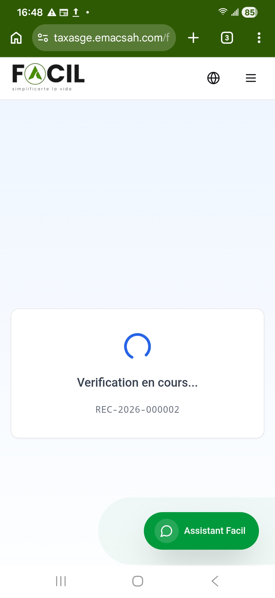
Caso 1 — Recibo válido
Cuando el recibo es auténtico, la pantalla muestra un icono verde de validación con el badge «Recibo Válido» y todos los detalles del pago: número, fecha, importe en XAF, método, pagador (parcialmente anónimo), código del trámite asociado, entidad emisora, tipo de solicitud y referencia.
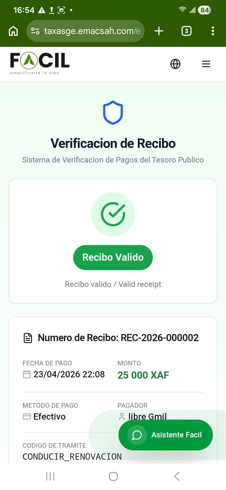
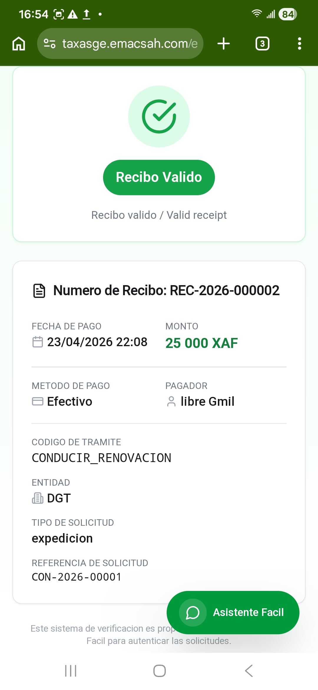
Caso 2 — Solicitud verificada
Cuando la referencia es una solicitud (PAS-, CON-, LIC-, etc.), la pantalla muestra «Solicitud Verificada» con los detalles del trámite : tipo, estado (Enviada / En proceso / Completada), entidad gestora, fecha de creación, cita programada (fecha + hora + lugar) e importe pagado.
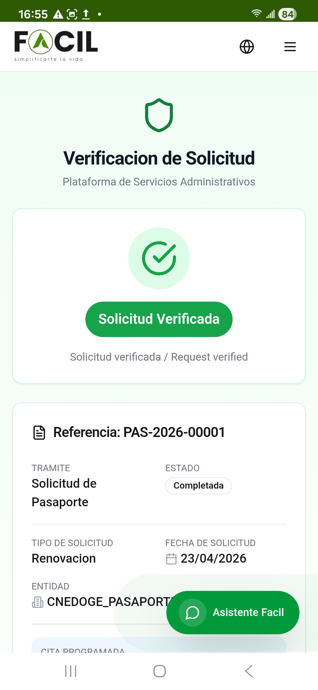
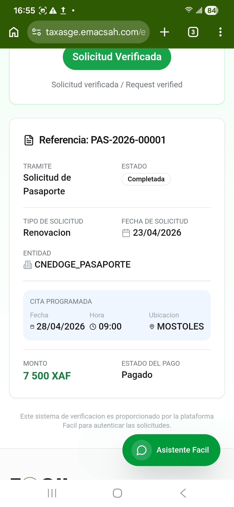
Caso 3 — Documento no válido (errores)
Si el documento no existe, ha sido revocado, o el token es inválido, la pantalla muestra un icono rojo/naranja con un mensaje claro y la referencia introducida. Dos ejemplos típicos:
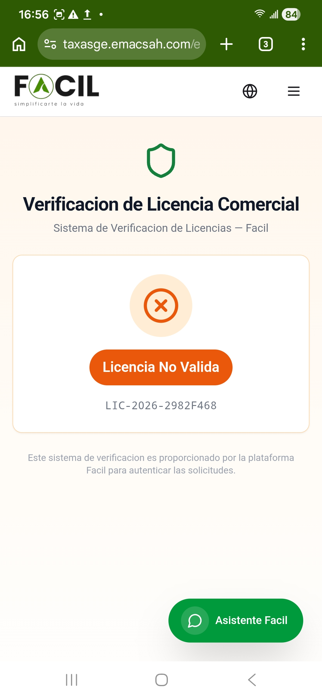
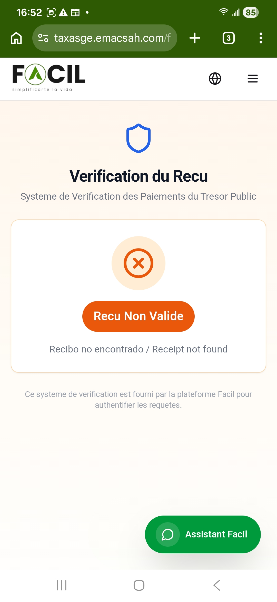
Versiones francesas (referencia)
Para usuarios francófonos, las mismas pantallas en versión francesa están disponibles vía la URL /fr/verify/{ref} o el selector ES/FR/EN en la cabecera. La estructura es idéntica:
Recibo válido — versión francesa («Verification du Recu»)
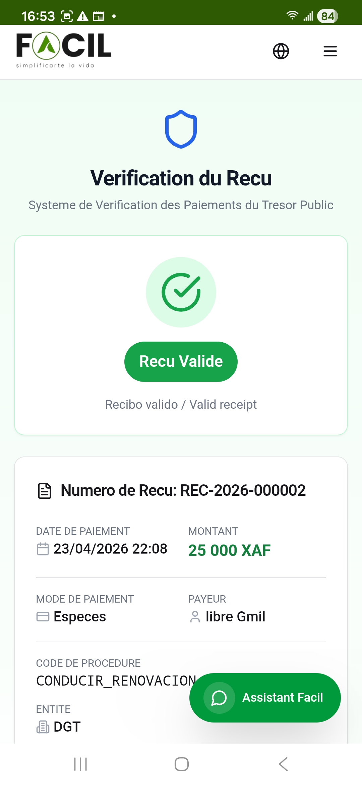
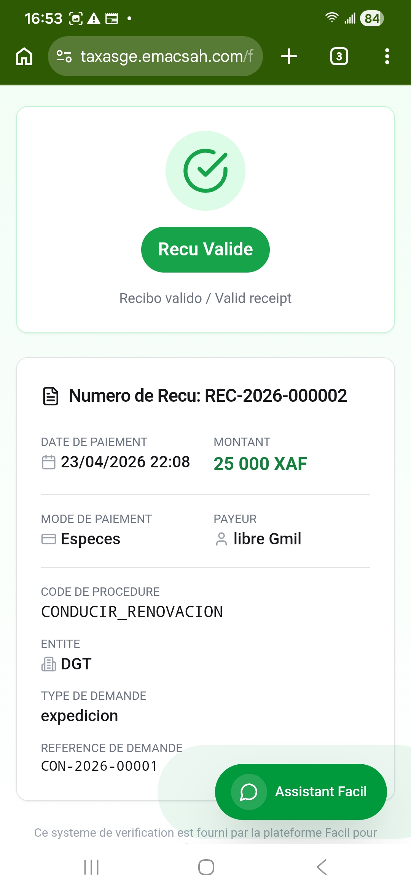
Solicitud verificada — versión francesa («Verification de la Demande»)
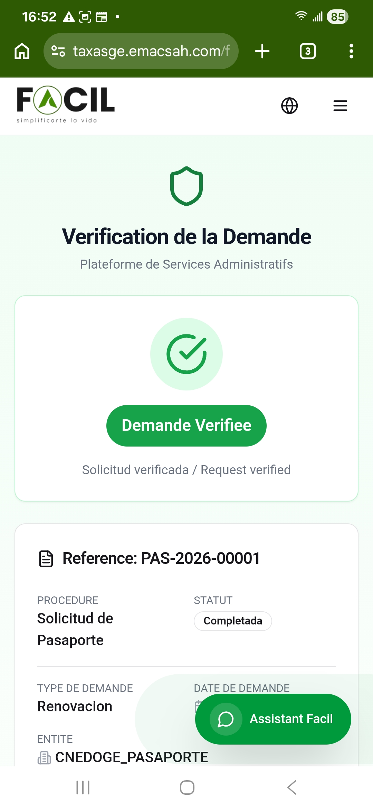
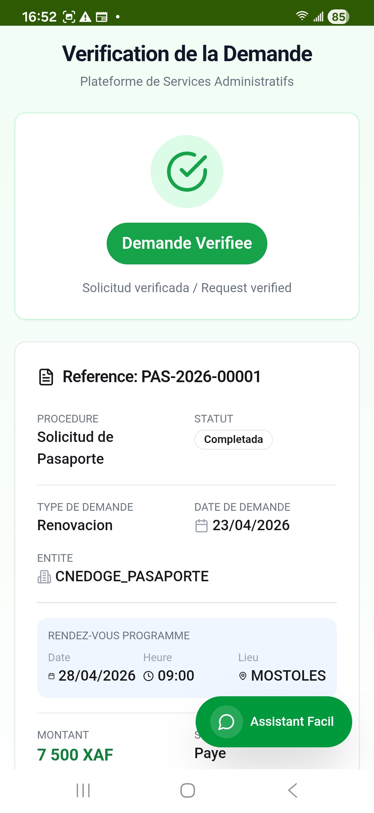
5. Ejemplos concretos (JSON)
Ejemplo 1 — Verificación pública de un recibo
URL : https://taxasge.emacsah.com/verify/REC-2026-000013?t=eyJhbGc...
GET → 200 OK
Respuesta:
{
"tipo": "recibo",
"numero": "REC-2026-000013",
"fecha": "2026-04-19T15:07:00",
"importe_xaf": 25000,
"metodo": "Efectivo",
"pagador_parcial": "libre G***",
"tramite_ref": "CON-2026-00001",
"entidad": "Tesoro Público Malabo II",
"estado": "valido"
}Ejemplo 2 — Verificación de una solicitud Conducir
URL : https://taxasge.emacsah.com/es/verify/CON-2026-00001?t=...
GET → 200 OK
Respuesta:
{
"tipo": "solicitud",
"subtipo": "conducir_renovacion",
"numero": "CON-2026-00001",
"estado": "Completada",
"entidad": "DGT",
"tipo_expedicion": "RENOVACION",
"cita": {
"fecha": "2026-04-28",
"hora": "09:00",
"oficina": "MALABO II"
},
"importe_pagado_xaf": 25000
}Ejemplo 3 — Token inválido
URL : https://taxasge.emacsah.com/verify/REC-2026-000013 ← sin token
GET → 403 Forbidden
Respuesta: { "error": "Token requerido para acceso público" }6. Seguridad y firma
- Token HMAC-SHA256 — el parámetro
?t=...es una firma HMAC del identificador. Sin la clave del Tesoro Público, es imposible falsificar. - Sin caducidad por defecto — los tokens son válidos mientras el documento existe. Para los documentos sensibles (recibos), un token puede ser revocado por un agente.
- Datos sensibles protegidos — el DIP completo, el teléfono, la dirección postal NUNCA se devuelven en la verificación pública. Solo los datos visibles en el documento PDF original se muestran.
- Audit log — todas las verificaciones se registran (IP, fecha, referencia). Útil para detectar fraudes (escaneo masivo).
- Rate limiting — máximo 60 verificaciones / minuto / IP para evitar abusos.
7. Mensajes de error posibles
| Mensaje | Causa | Acción |
|---|---|---|
Token requerido | Falta el parámetro ?t=... | Re-escanee el QR original o solicite un nuevo enlace al emisor. |
Token inválido | Token modificado o caducado | El documento ha sido alterado. No fíarse, contactar al emisor. |
Documento no encontrado | Referencia inexistente | Verifique la ortografía. Los identificadores son case-sensitive (REC, CON, LIC, PAS). |
Documento revocado | El documento ha sido invalidado por un agente (fraude, error de tratamiento) | El documento ya no es válido. Contactar al emisor. |
Demasiadas verificaciones | Rate limit (60/min/IP) superado | Espere 1 minuto y vuelva a intentarlo. Si persiste, contactar soporte. |